Barracuda PoseNet Tutorial Pt. 3 (Outdated)
Version 2: Part 1
Last Updated: Nov 30, 2020
Previous: Part 2 Part 2.5
Introduction
We can now start using the Barracuda library. We’ll first install the Barracuda package for our project and import the PoseNet model. We’re going to modify the model a bit to make postprocessing easier. Finally, we’ll perform inference using a preprocessed image as input.
Install Barracuda Package
Select the Package Manager tab in the Unity editor.
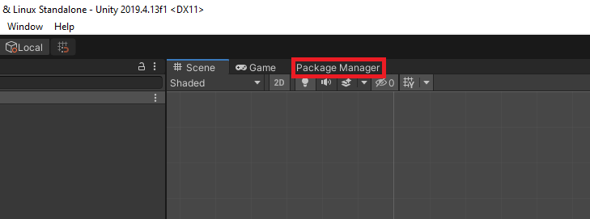
Type Barracuda into the search box. The version of the package used in the tutorial is 1.0.4.

Click the Install button to install the package.
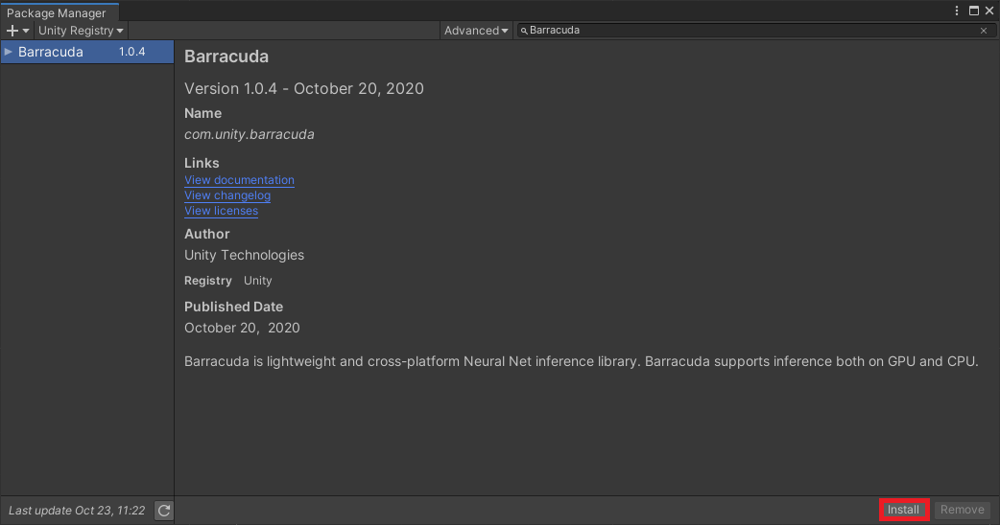
Wait for Unity to install the dependencies.

Import PoseNet Model
Now we can import the model into Unity. The Barracuda dev team has focused on supporting the ONNX format for models. We aren’t able to directly import models from TensorFlow or PyTorch. I’ve already converted the PoseNet model to ONNX. You can check out my tutorial for converting TensorFlow SavedModels to ONNX (here). PyTorch provides built-in support for ONNX (link).
Download the ONNX File
You can download the converted PoseNet model from the link below.
- ResNet50: (download)
Import Model to Assets
Create a new folder in the Assets window and name it Models. Drag and drop the ONNX file into the Models folder.
If you select the resnet50 asset, you should see the following in the Inspector tab.

Load the Model
Next, we need to implement the code for loading the model in the PoseNet script.
Add Unity.Barracuda Namespace
Open the PoseNet script and add the Unity.Barracuda namespace at the top of the script.
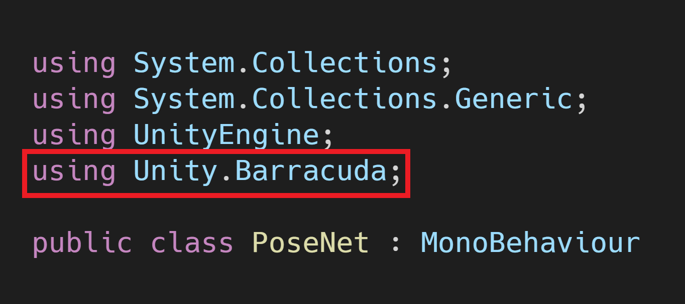
Create modelAsset Variable
Make a new public NNModel variable called modelAsset. We’ll assign the resnet50 asset to this variable in the Unity Editor.
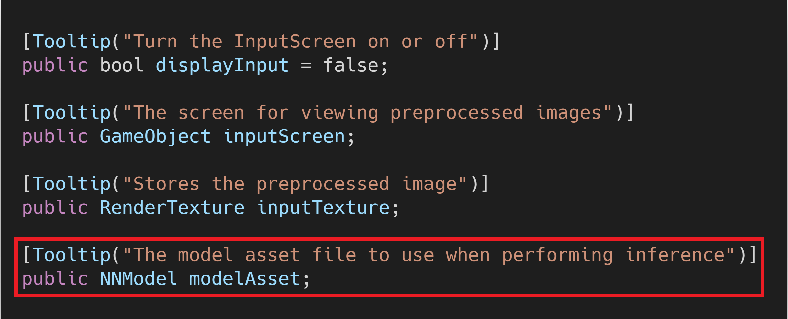
Create workerType Variable
We’ll also add a variable that let’s us choose which backend to use when performing inference. The options are divided into CPU and GPU. I believe there are plans to add support for specialized hardware such as Neural Processing Units in the future. Our preprocessing pipeline runs entirely on the GPU so we’ll be sticking with the GPU options for this tutorial series.
Make a new public WorkerFactory.Type called workerType. Give it a default value of WorkerFactory.Type.Auto.
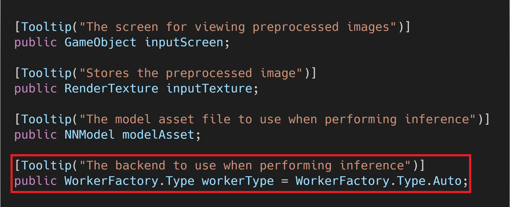
Create m_RuntimeModel Variable
We need to compile the modelAsset into a run-time model to perform inference. We’ll store the compiled model in a new private Model variable called m_RuntimeModel. This is the naming convention used in the Barracuda documentation.
Create engine Variable
Next, we’ll create a new private IWorker variable to store our inference engine. Name the variable engine.
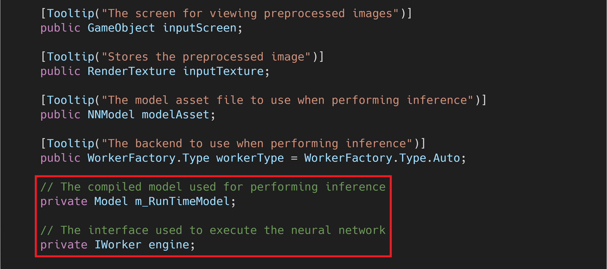
Create heatmapLayer Variable
Add a new private string variable to store the name of the heatmap layer in the resnet50 model. We’ll need the output of this layer to determine the location of key points (e.g. nose, elbows, knees, etc.) in the input image. We can find the name for the model’s output layers in the Inspector tab. For our model, the heatmap layer is named float_heamap.
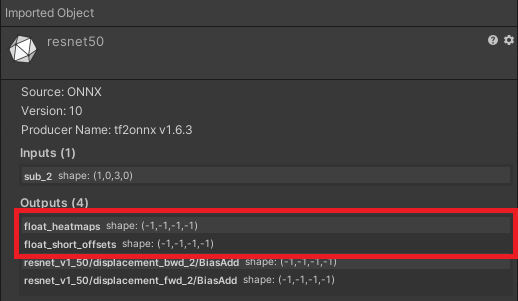
Note: The last two output layers, resnet_v1_50/displacement_bwd_2/BiasAd and resnet_v1_50/displacement_fwd_2/BiasAd, are used when estimating the pose of multiple people. We’ll be sticking to single pose estimation for this series.
Create offsetsLayer Variable
We’ll go ahead and create a variable for the float_short_offsets layer as well since we’ll need it later. The output from this layer is used to refine the estimated key point locations determined with the heatmap layer.
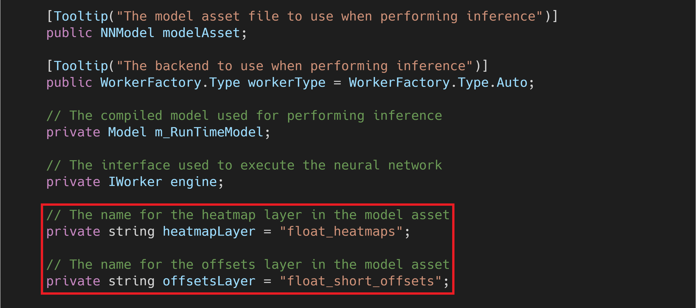
Compile the Model
We need to get an object oriented representation of the model before we can work with it. We’ll do this in the Start() method and store it in the m_RuntimeModel.

Modify the Model
We need to add a Sigmoid layer to the end of the model before creating our inference engine. This will map the output values to the range [0,1]. We’ll use these values to measure the model’s confidence that a given key point is in a given spot in the input image. A value of 1 would indicate that the model is 100% confident the key point is in that location. We won’t be getting any 1’s.
First, we need to make a new private string variable to store the name of this new layer. We’ll name the variable predictionLayer and name the layer heatmap_predictions.
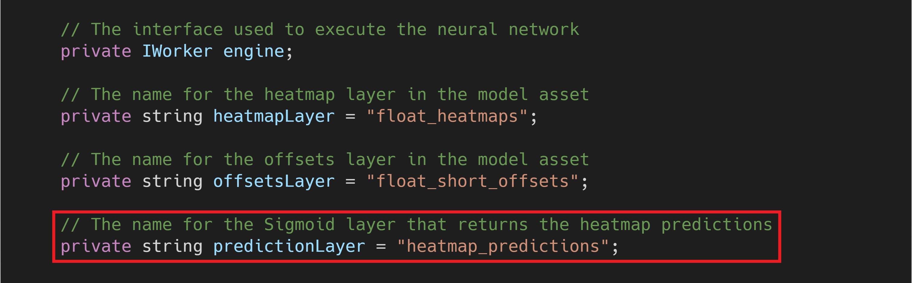
We’ll add the new layer using a ModelBuilder.
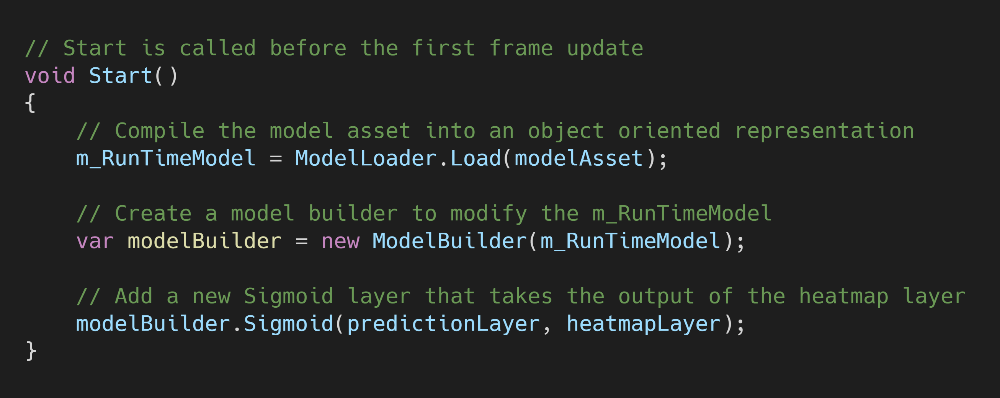
Initialize the Inference Engine
Now we can create a worker to execute the modified model using the selected backend. We’ll do this using the WorkerFactory.CreateWorker() method.
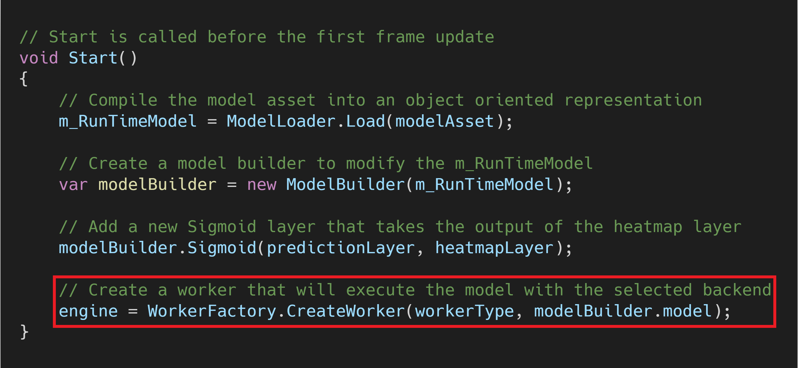
Release Inference Engine Resources
We need to manually release the resources that get allocated for the inference engine. This should be one of the last actions performed. Therefore, we’ll do it in the OnDisable() method. This method gets called when the Unity project exits. We need to implement this method in the PoseNet script.
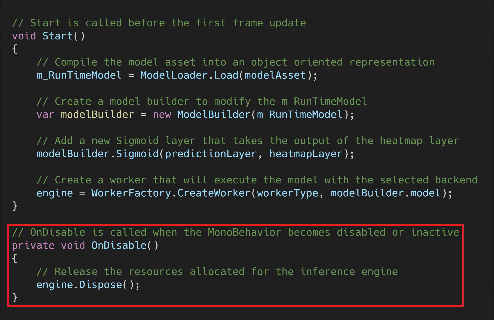
Set Inspector Variables
Now we just need to set the values for the Model Asset and select the inference backend.
Assign the Model Asset
With the PoseEstimator object selected, drag and drop the resnet50 asset into the Model Asset variable.
Select Inference Backend
Set the backend to the Compute Precompiled option in the Worker Type drop-down. This is the most efficient GPU backend.

Perform Inference
Finally, we’ll add the code to perform inference in the Update() method.
Create the input Tensor
We need to convert the processedImage to a Tensor before we can feed it to the model. The Tensor constructor requires us to specify the number of channels in the image. We don’t need the alpha (transparency) channel so we’ll specify 3 for the RGB color channels.
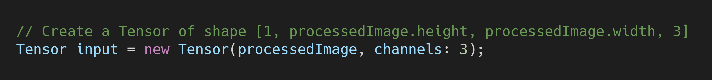
Execute the Model
We’ll use the engine.Execute() method to perform inference. This method takes in the input Tensor and schedules the network execution.
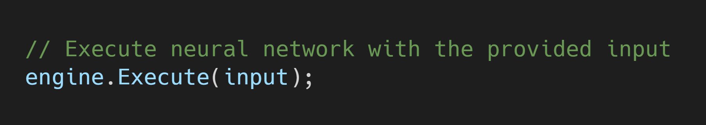
Release Input Tensor Resources
We’ll need to manually release the allocated resources for the Tensor with the input.Dispose() method.

Here is the revised Update() method.
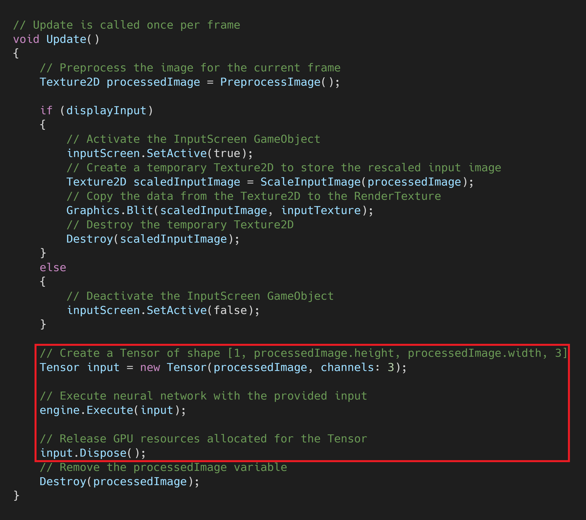
Summary
We’ve finally performed inference using a PoseNet model in Unity. However, we need to process the output from the model to determine the estimated key point locations. We’ll cover how to perform the postprocessing operations in part 4.